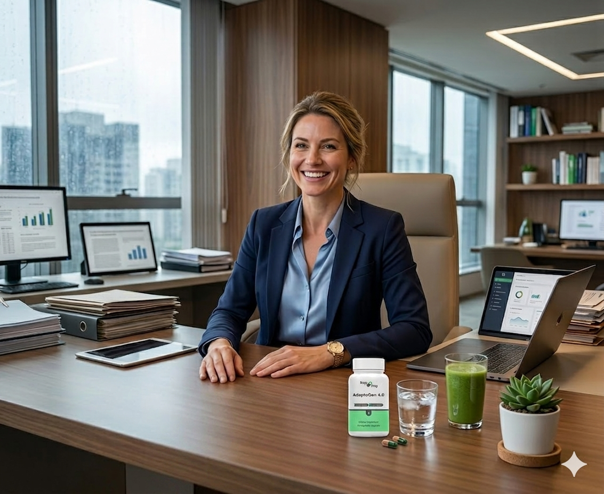

Modern life can be demanding. Many adults notice that periods of increased stress may affect their daily habits, energy levels, motivation and overall wellness routines.
Stress is one of the most discussed topics in modern wellness.
Stress may influence eating patterns, activity levels and sleep quality.
Many adults report feeling mentally and physically drained during stressful periods.
Maintaining healthy routines may become more challenging when life feels overwhelming.
Small changes in daily routines can make a meaningful difference over time.
Long-term wellbeing often starts with consistent daily choices.
Rest plays an important role in supporting overall wellness.
Movement is often considered a key part of a healthy lifestyle.
Nutritious foods may help support daily energy and wellbeing.
Relaxation techniques and healthy routines may support balance.
Adaptogens have become increasingly popular among wellness-focused adults.
Often included as part of broader healthy lifestyle routines.
Many people explore adaptogens while seeking greater balance.
Best combined with quality sleep, nutrition and exercise.
A growing trend among adults interested in long-term wellbeing.

Wellness is rarely about one single action. Consistent habits such as quality sleep, balanced nutrition, regular movement and stress management may help support long-term wellbeing.
Many adults are also exploring adaptogen-based supplements as part of a broader wellness routine designed to support a balanced and active lifestyle.
Explore AdaptoGen 4.0Many wellness-conscious adults are exploring adaptogen supplements as part of a balanced lifestyle that includes healthy nutrition, movement and quality sleep.
View Official Website